Iban FERNANDEZ
Ingénieur en Robotique et systèmes embarqués
- Mécanique : CAO, CATIA, SOLIDWORKS, impression 3D
- Développement logiciel : C#, C++, Ada, C, langages du Web, moteurs de jeu Unity 3D, Unreal Engine, Godot
- Électronique : analogique, numérique, conception de cartes
- Gestion de projets
- Prototypage
- Interventions terrain
Je suis ingénieur en robotique et systèmes embarqués, avec une forte expérience en instrumentation scientifique, tant sur le plan technique que sur l'aspect applicatif terrain.
Après avoir travaillé au Laboratoire des Sciences du Climat et de l'Environnement j'ai passé une année en Antarctique en tant qu'électronicien science. À la suite de cette expérience j'ai occupé le poste de Responsable technique à l'Observatoire volcanologique et sismologique de Martinique.
Toutes ces expériences m'ont donné de solides fondements techniques et une très bonne expérience terrain.
Entreprises et postes occupés
- Développeur de jeu vidéo en indépendant, 10/2024 - 10/2025
- 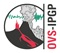
Observatoire Volcanologique et Sismologique de Martinique- Ingénieur de recherche, 03/2024 - 07/2024
- Responsable technique, 03/2023 - 03/2024
Institut Polaire Français- Électronicien science, 08/2021 - 01/2023
- 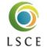
Laboratoire des Sciences du Climat et de l'Environnement- Ingénieur de recherche, 01/2020 - 07/2021
Consultant pour Arianegroup- Développeur informatique, 04/2019 - 12/2019
SNCF - Transilien- Apprentissage - développeur informatique, 07/2017 - 07/2018
- Ainolabs (start-up de réalité virtuelle)
- Apprentissage - développeur informatique, 07/2015 - 07/2017
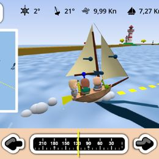
Jeu vidéo de course de voile
C#, C++, simulation de fluide, Godot, Unity 3D
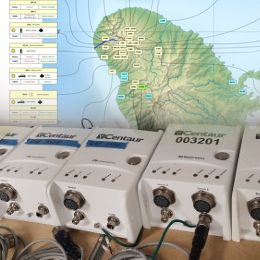
Responsable Technique d'un observatoire
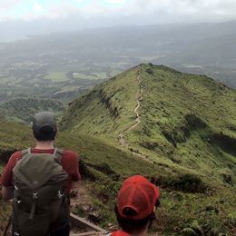
Soutien aux équipes terrain pour des manips scientifiques et techniques
Électronique - interventions terrain
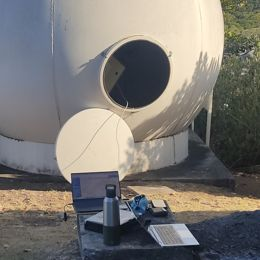
Entretien, réparation et installation de stations
Interventions terrain - électronique

Installation d'un mât pour antenne parabolique
Béton, fixation de mât acier

Modernisation d'un nœud de communication du réseau d'instruments
Électronique, électricité, instrumentation
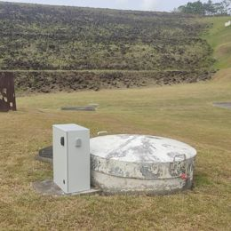
Modernisation de l'instrumentation du barrage de La Manzo
Interventions terrain - communication via modem ethernet
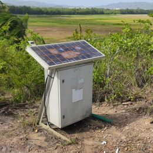
Conception, fabrication et installation de stations sismiques RAP
Électronique - informatique - instrumentation - transfert de données - conception de pièces acier - fabrication - achats - administratif
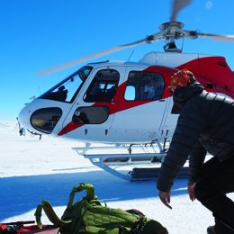
Interventions terrain pour des manips scientifiques et techniques
Électronique - terrain

Analyse pannes pluviomètre
Électronique - analyse de pannes

Conception de boutons tactiles analogiques
Électronique analogique - impression 3D
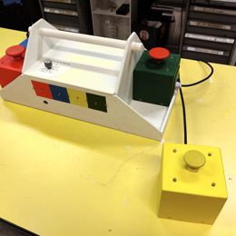
Conception et fabrication de buzzers
Électronique - programmation - impression 3D - menuiserie
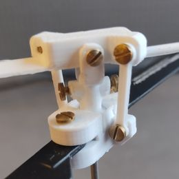
Conception et fabrication d'un rotor d'hélicoptère radiocommandé
CAO (CATIA) - impression 3D
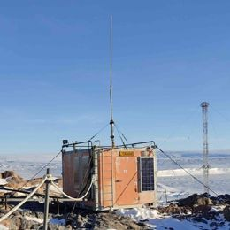
Réorganisation d'un shelter d'instruments de mesures
Électronique - Organisation - menuiserie - impression 3D
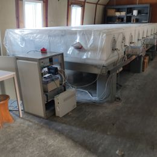
Diagnostic des capteurs météo du détecteur de rayons cosmiques
Électronique - analyse de pannes
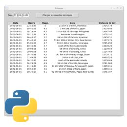
Développement d'un outil de récupération de données sismiques
Développement logiciel - Python - requêtes web
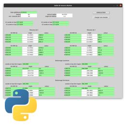
Développement d'un outil de saisie de données
Développement logiciel - Python
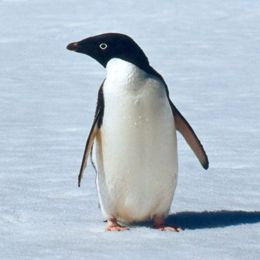
Installation des instruments de suivi d'une colonie de manchots
Électronique - intervention terrain
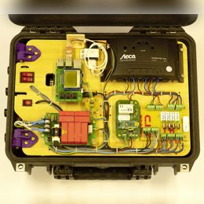
Refonte ergonomique d'un système d'acquisition d'antenne
Électronique - impression 3D - CAO - fabrication
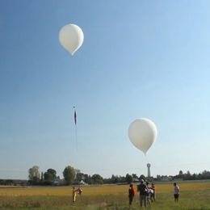
Participation aux missions d'échantillonnage de l'air par ballon
Intervention terrain
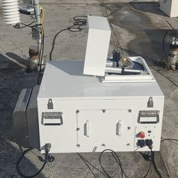
Automatisation du boîtier d'un instrument de mesure
Électronique - informatique - instrumentation - transfert de données - conception de pièce acier - fabrication - achats - documentation

Développement d'un logiciel de commande d'électrovannes
Raspberry Pi, serveur Apache, HTML, CSS, PHP, JavaScript, communication Socket, Arduino, GitHub, gestion de projet
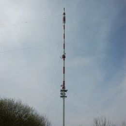
Automatisation et instrumentation de tours de prélèvement d'air
Électronique - électricité - informatique - instrumentation - transfert de données - conception de pièce acier - fabrication - achats - documentation
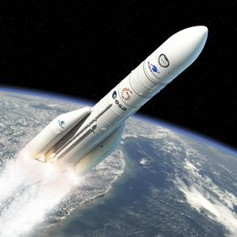
Logiciel embarqué dans une fusée pour le contrôle de systèmes mécatroniques
Développement informatique Ada
Projets personnels